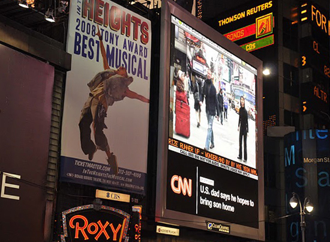
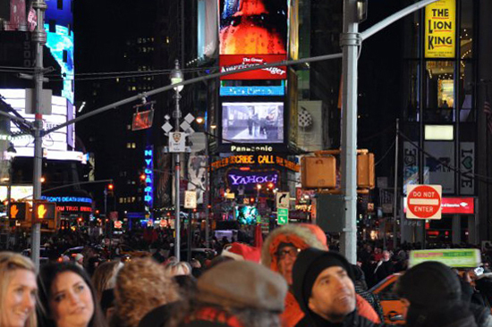

Hye Yeon Nam
Wonderland
2008 Feb, Single Channel Video
Still Image (Time Square Screening, 2009 Dec)
 
VIdeo (Videographer: PEI-CHUAN CHUNG)
Space takes on multiple definitions. For me, I understand space as the sum of cultural and social forces that act on me. Through the space, my body feels all changes around me instantly and intimately. When I move from Korea to the United States, my body became a gauge that felt my displacement and recognized not only the conformity inflicted on me in the United States, but it also allowed me to deconstruct the rule from my hometown that I had taken for granted as normal.
In my video piece, I attempt to convey the feeling of displacement and conformity by acting of walking. I perform walking forward and other people seem to be walking backward. However, I was walking backward in the real scene and I made it simply reversed. The space of being neither here following correct rule nor there following incorrect rule is precisely what I try to convey in this video.
- Exhibition
- 2012 Jan, “Touching Anomaly”, 3rd Ward, Brooklyn, NY
- 2011 Feb, “Push/Pop” Screening, Seattle, WA
- 2011 Jan, “Somewhere In-Between”, Buffalo, NY
- 2009 Dec, Time Square Screening, NY (curator Isabella Rossellini)
2009 Sep, the Lab, San Francisco, CA
2009 Sep, Tweak, Ireland
2009 Aug, Video Screening, The Bhavan, London, UK
2009 Aug, Simply Screen: Inbetweeners of Asia, Transart Institute at Tanzfabrik, Berlin, Germany
2009 Jul, Screengrab(Place|Identity|Space|Community), James Cook University, Australia
2009 Jun, Archetime, The tank NYC, NY (supported by LMCC, The Tank NYC, NYU Future Salon)
2009 May, ICAD 09, Re-New Festival, Copenhagen, Denmark
2008 Dec, MISC Video & Performance, NY Studio Gallery, NYC
2008 Aug, One Minute Festival & Video Festival Aarau, Switzerland
2008 Aug, Siggraph 2008 Art Show, LA
2008 Mar, The Future Was Then ..... so now what , SCOPE New York, SCOPE Pavilion Lincoln Center, NYC
2008 Mar, Centennial video special , Crawl Space, Seattle
2008 Feb, International Winner 2008 , Hun Gallery, NYC
- Award
- 2009 Dec, Runner-up, Metropolis Art Prize, NYC
2009 Dec, Honorable Mention, Porto, Portuga
2009 Sep, United Creators Video Award, NYC
2009 Aug, Focal Press Voucher (AUS $1000), Australia
2008 Feb, International Winner 2008 , Hun Gallery, NYC
- Review
- 2009 Oct, Real Time Issue(Magazine), #93 Oct-Nov 2009, by editor Bernadette Ashley
2008 Aug, Siggraph, report by JEN ZEN